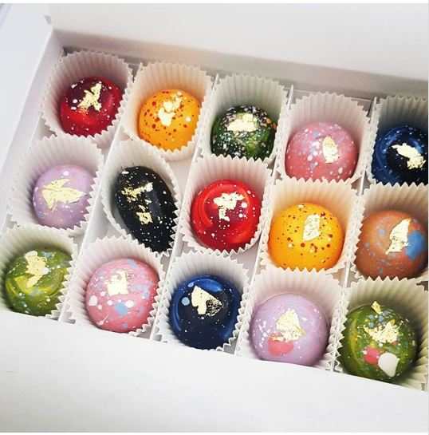
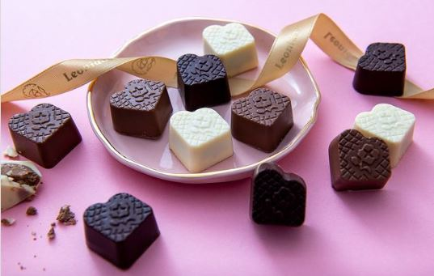
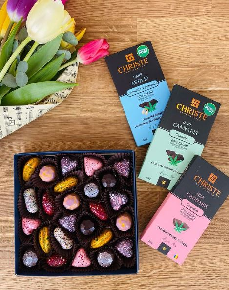
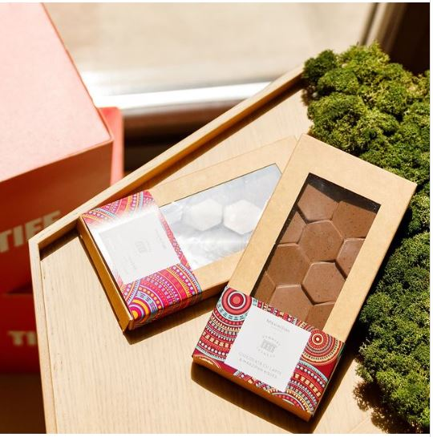
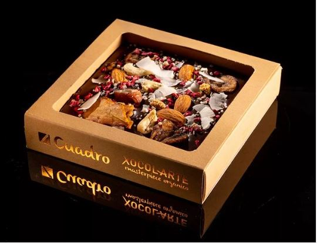

Nu cred că există tentație mai mare decât… ciocolata. Ei bine, cel puțin, nu există tentație culinară mai mare decât ea. Dulce, amară, cu migdale, cu alune, cu fistic sau cu bucățele de zmeură, preparată în casă sau poate de un maestru dedicat acestui desert nevinovat, orice ar fi, de cele mai multe ori reușește să aducă un zâmbet oricui, dar te poate face să uiți instant de tot stresul acumulat.
Iar cum ciocolata reușește să-și atragă mulți fani de partea sa, dar și să constituie cadoul perfect pentru aproape oricine, indiferent dacă este vorba de 8 martie, o zi aniversară sau o zi onomastică, ne-am gândit ca astăzi să-ți povestim puțin despre locurile din Cluj unde poți găsi cea mai bună ciocolată artizanală.
Bineînțeles că în topul recomandărilor noastre se află Muri Chocolatier, un loc unde ciocolata ia forma unor praline delicioase, pregătite cu multă grijă. Pe lângă acestea, poți găsi la Muri un loc ideal de unde să-ți procuri și trufe, tarte și torturi, bomboane pictate manual, pentru cele mai importante ocazii din viața ta, în care ciocolata premium să-ți îndulcească momentele prețioase. Între noi fie vorba, îți recomandăm cutiile cu bomboane pictate manual, mai ales pentru că sunt printre cele mai elegante și mai gustoase cutii de bomboane pe care le poți găsi în Cluj. Poți să alegi o cutie mică, doar cu patru bomboane sau una personalizată, dar și varianta Chocolate Madness, cu 15 bomboane diferite, fiecare având propria sa explozie de gusturi și de arome. „Clătește-ți ochii” aici, cu cele mai speciale bomboane de ciocolată.
Rămânem tot în sfera bomboanelor și a pralinelor de ciocolată și continuăm cu Leonidas. Toate produsele de aici sunt create numai din ciocolată cu unt de cacao pur 100%, astfel încât ciocolata să fie una sănătoasă și dusă la rang de deliciu culinar. În ciocolateriile Leonidas ești întâmpinat cu o multitudine de bomboane, care sunt gata-gata să se strecoare în cutia perfectă pentru tine. Pe lângă bomboanele cu arome de caramel sărat, găsești și multe produse din gama confiseriei, precum sunt ciocolata la tabletă, caramele, batoanele de ciocolată sau dropsuri de ciocolată belgiană, potrivite pentru ciocolată caldă sau pentru realizarea unei prăjituri cu ciocolată de înaltă calitate. Aici găsești mai multe produse, precum și prețurile aferente acestora.
Tot în aceeași notă delicată de praline și tablete de ciocolată preparate din ingrediente premium este și Christe Chocolatier, un loc unde dulciurile sunt un deliciu pentru oricine trece pragul. Vei putea găsi și trufe de ciocolată, alese cu grijă și pentru cel mai pretențios client, iar prețurile pentru acestea pornesc de la 35 lei/cutia. Dintre specialitățile ciocolateriei se numără și fructele confiate și învelite în ciocolată neagră sau cu lapte, pe care le poți strecura oricând în geanta cu care ieși în oraș sau pe care o iei la muncă, pentru un desert rapid și delicios. Fie că vrei să-i faci o bucurie sau să surprinzi pe cineva drag, ciocolata devine cu ușurință o variantă simplă pentru a bucura pe oricine. Vezi aici ce specialități potrivite ocaziei tale poți lua de la Christe.
Maximilian Chocolat este una dintre ciocolateriile recent deschise la noi în oraș, dar și una care te încântă pe cât de mult posibil. Cu o singură vizită poți cumpăra atât ciocolată caldă (pe băț, sub formă pulbere, atât clasică, cât și cu bezele), potrivită pentru strecurat în cană, cât și o cutie cu praline pictate manual, produse din ciocolată belgiană de înaltă calitate, dar și trufe sau tablete de ciocolată, pe care le poți adăuga în cadouri pentru cele mai dragi persoane din viața ta. Prețul unei tablete de ciocolată este unul modic, de 19 lei, încât te tentează să-ți cumperi o ciocolată cu prima ocazie. Iar dacă simți că ești un adevărat fan al ciocolatei și ți-ar plăcea să descoperi mai multe despre aceasta, poți oricând să te alături unui workshop, unde poți afla secretul unei trufe perfecte. Înscrierile se fac aici.
La Xocol’Arte poți opta pentru ciocolată artizanală vegană, realizată în laboratorul lor din Cluj-Napoca. Cu multă atenție pentru mediu și pentru un stil de viață sănătos, ciocolateria vine cu multe variante în care te poți bucura de ciocolată: gama Loving Animals, care include tablete de ciocolată, perfecte pentru luat oriunde atunci când vrei să te bucuri de ceva dulce, gama Ronda constă într-un sortiment de 8 „bombe” de ciocolată caldă, care îți vor face un spectacol în ceașca cu lapte, iar ultima, dar nu cea din ultimă, este gama Cuardo, unde clasica tabletă de ciocolată capătă o înfățișare de gală, cuprinzând fructe uscate, nuci, pudră de banane și nu numai. Toate deliciile se găsesc aici, doar la un click distanță.
Până ajungi în Belgia, Cluj-Napoca te bucură pe cât de mult posibil în ceea ce privește ciocolata artizanală, pe care o găsești preparată cu la fel de multă dedicare, dar și cu ingrediente de înaltă calitate, care punctează cele mai fine nuanțe ale acesteia.
La început a fost… nimeni și nimic care să ne vorbească despre viața orașului, despre ce se întâmplă în materie de evenimente și localuri pe plan local, niciun motiv care să ne scoată din casă.
Everyday we’re clujlife(ing). Ieșim din casă, vedem ce se întâmplă, ce mai e nou, ce mai zice lumea, ce-ar mai fi interesant de făcut, și apoi îți povestim și ție. Facem asta din Ianuarie 2008. Prezența aceasta îndelungată ne-a adus destule cunoștințe și curaj încât să abordăm subiecte pe care nu le ”atinge” nimeni. Avem informații pe care nu le găsești în altă parte și acces la mulți oameni din varii domenii.